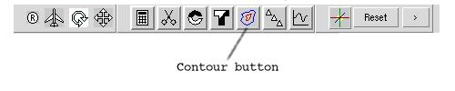
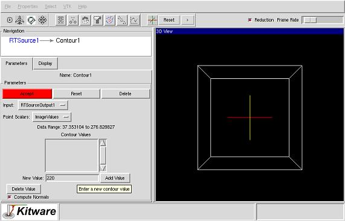

Step 3
Click the Contour button on the toolbar.

Step 4
In the contour parameters window, type 220 in the "New Value" entry
and press enter.

Step 5
Next add a iso-surface with a value of 200 and click Accept to display
both contours.
Last modified: Mon Dec 3 10:31:34 EST 2001